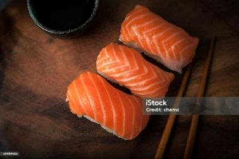
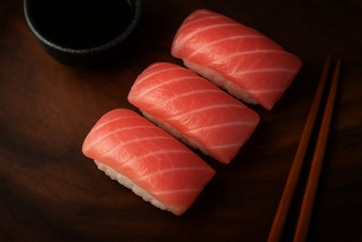
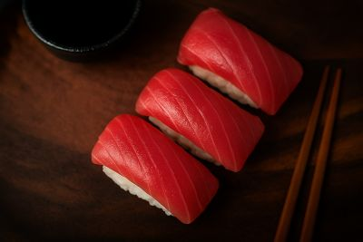

寿司の由来と魅力
寿司は日本の伝統的な料理であり、古くは魚の保存法として発展しました。現代では味や見た目の美しさも重視され、世界中で親しまれています。
・紀元前（東南アジア） 魚を米と一緒に発酵させた「熟鮓（なれずし）」が始まり
・平安時代（日本） 「鮒鮓（ふなずし）」として滋賀県などで定着
・江戸時代（18世紀） 酢飯を使い生魚をのせる「握り寿司（江戸前寿司）」が登場
・明治以降 全国に広がり、現代の寿司の原型に発展
・現代 世界的な和食文化の象徴に。カリフォルニアロールなど多様化
🥇 サーモンの詳細
・寿司ネタとしてのサーモンは、今や日本でもっとも人気のあるネタの一つです。元々日本の伝統的な寿司ネタではありませんでしたが、今では回転寿司から高級寿司まで幅広く使われています。
・サーモンは脂がのっていて、口の中でとろけるような食感が特徴です。特に若年層に人気が高く、炙りやマヨネーズ、オニオンスライスを乗せたバリエーションも豊富です。
濃厚な旨味：脂肪分が多く、舌にとろけるようなコクがあります。
クセがない甘み：後味がすっきりしており、酢飯との相性も良好。
脂のバランスが絶妙：とろサーモンになると特にジューシーで、濃厚感がアップします。
🥈 中トロ（まぐろ）の詳細
・中トロはまぐろの腹部の部位で、赤身のさっぱり感と脂の甘さが絶妙に融合しています。贅沢感があり、特別な一貫として人気です。
味： 赤身の旨味＋脂の甘み＝濃厚でまろやか
食感： しっとり＆とろける。滑らかな舌触り
香り： 脂の香りが広がり、まろやかで上品
・とろける」ほど脂っこすぎず、上品で繊細。
・赤身よりリッチでコク深いが、大トロほど重くない。
🥉 まぐろ（赤身）の詳細
・赤身はヘルシーでクセがなく、まぐろ本来の旨味をダイレクトに味わえます。寿司の王道ともいえるネタで、幅広い世代に支持されています。
・赤身は「さっぱり」「ヘルシー」「本来の魚の味を楽しめる」という点で、トロとは異なる良さがあります。
味： あっさり・上品な旨味。魚本来の風味を感じやすい。
食感： しっとりして弾力あり。脂が少ないため舌にベタつかない。
香り： 生臭さが少なく、上品な香り。新鮮なものほど爽やか。